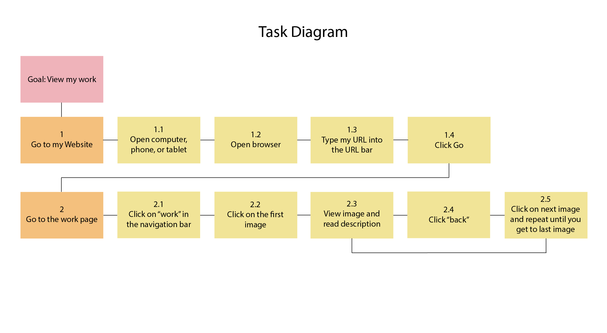

Task Diagram
Text
Goal: Navigate my Portfolio Website
1. Finding my Website
1.1 Open computer, phone, or tablet.
1.2 Open browser.
1.3 Type https://starryshoyru.github.io/avt415/ into the
URL bar.
1.4 Click go
1.5 Read my homepage
2. View my work
2.1 Click on “Work” on the navigation bar.
2.2 Click on the first image.
2.3 View image and read description.
2.4 Click “back”
2.5 Click on the next image and keep repeating these tasks until you get to the last image.
3. Learn about Me
3.1 Click “About” on the naviagtion bar.
3.2 Read about me.
4. Contact Me
4.1 Click “Contact” on the navigation bar.
4.2 Type your information and message in the form.
4.3 Click enter
4.4 (Optional) Locate my email and social media account
4.5 (Optional) Send me an email or search for my social media
Task Diagram
